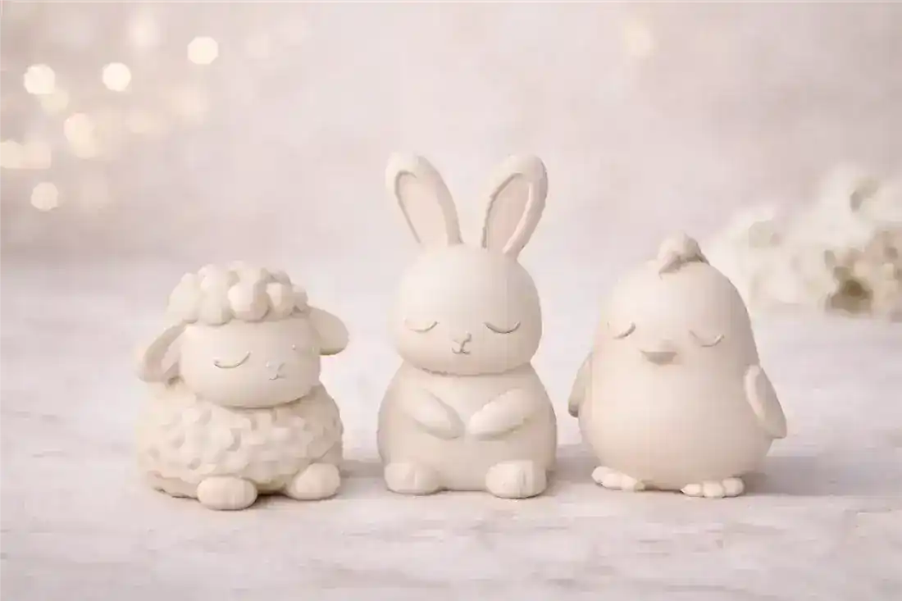
01 3D ModelCutie Easter Farm Animals Set
A pocket-sized barnyard of chicks, lambs, and bunnies with rounded, toy-like charm. They print small and forgiving, which makes them ideal for Easter baskets.
Soft pastels and rounded forms define the spring shelf. These bunnies, eggs, and gnomes print quickly and read sweet rather than saccharine, and the blossom coasters carry the season straight to the coffee table. A good intro to two-tone printing if you want petals that pop.
15 printable models · direct links · free to browse№ 01 · A pocket barnyard that fits inside Easter eggs.

01 3D ModelA pocket-sized barnyard of chicks, lambs, and bunnies with rounded, toy-like charm. They print small and forgiving, which makes them ideal for Easter baskets.
№ 02 · Two seasonal icons in one smooth print.
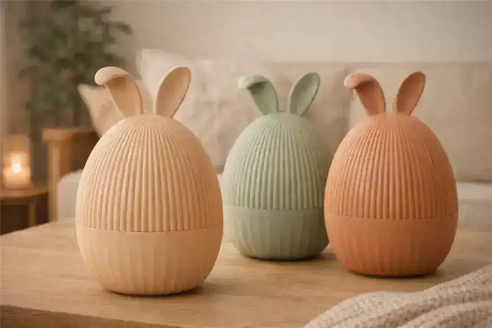
02 3D ModelAn egg-shaped bunny that balances the two icons of the season in one smooth form. It prints in one go with no supports, so it is easy to batch for a table centerpiece.
№ 03 · Soft ears, calm pose, instant spring.
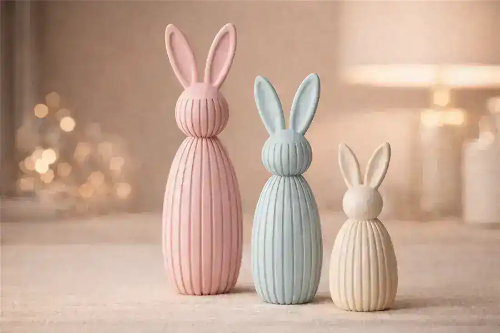
03 3D ModelA gentle rabbit with soft ears that anchors a spring vignette on a console or side table. Matte pastel filament keeps the look calm and seasonal.
№ 04 · Those eyes do all the work.
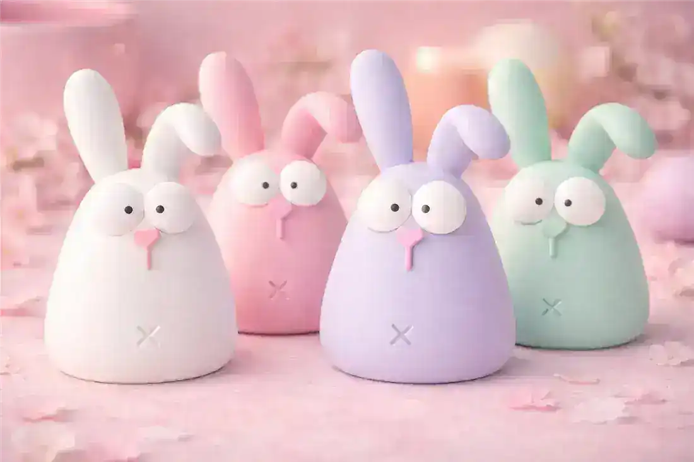
04 3D ModelBig eyes, tiny paws, and a pastel body make this bunny hard to resist. It is a sweet shelf companion long after the chocolate is gone.
№ 05 · Two-tone petals against matte fur — worth the swap.
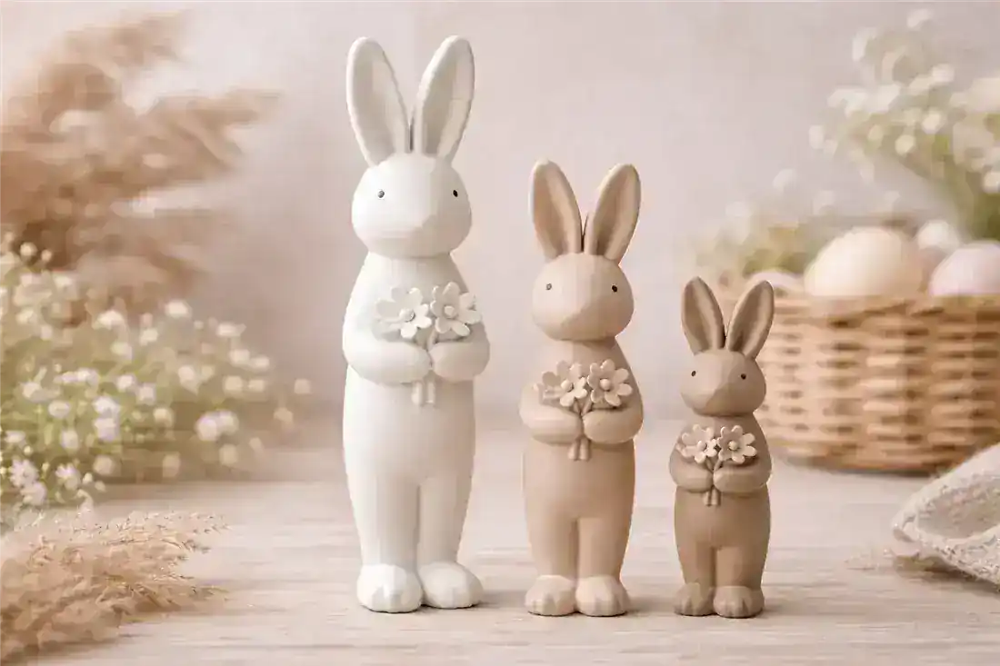
05 3D ModelA rabbit framed by blooming flowers that captures the first warm week of spring. Two-tone printing gives the petals a fresh pop against the fur.
№ 06 · A greeter that also holds the candy.
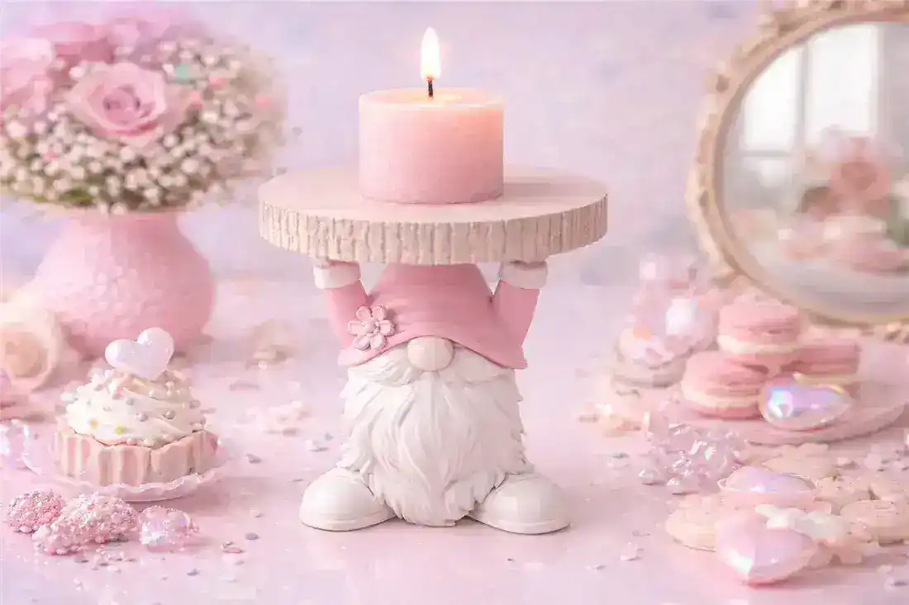
06 3D ModelA bearded spring gnome that holds treats or small eggs in its outstretched hands. It doubles as a candy dish and a cheerful little greeter.
№ 07 · Clean silhouettes for modern shelves.
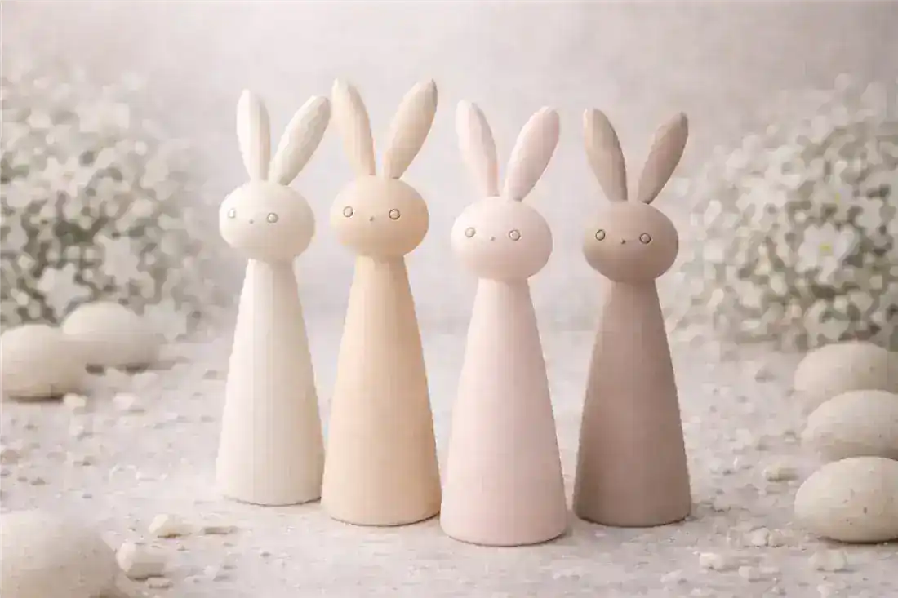
07 3D ModelClean, sculptural bunnies with no fuss and plenty of presence. They suit modern shelves and print beautifully in single muted tones.
№ 08 · Turns a chocolate egg into a presentation.
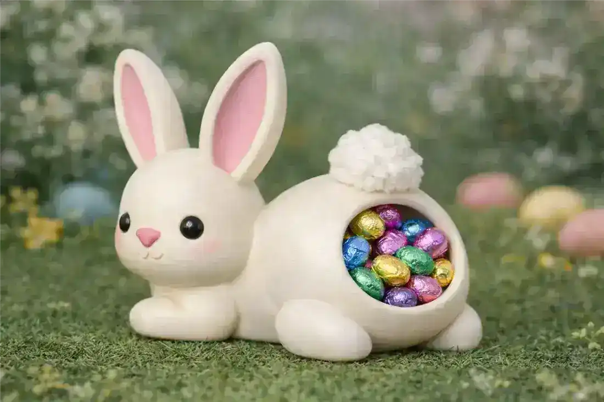
08 3D ModelA bunny that presents a chocolate egg like a tiny pedestal. It turns an ordinary candy into a little gift moment at the table.
№ 09 · An evening of printing, a windowsill of animals.
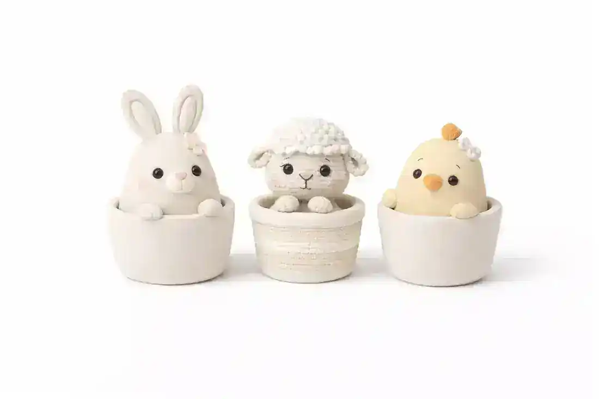
09 3D ModelA micro menagerie of farm friends sized for windowsills and egg carton displays. Print a whole set in one evening for a playful spring scene.
№ 10 · Valentine warmth that survives until spring.
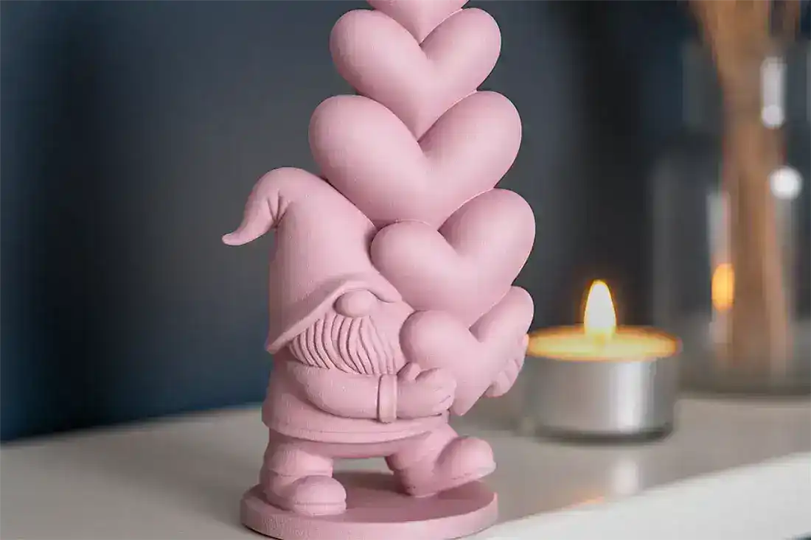
10 3D ModelA gnome cradling a heart that works for both Valentine's week and spring shelves. The soft beard and warm heart print nicely in two tones.
№ 11 · Matched scale — the display looks curated, not collected.
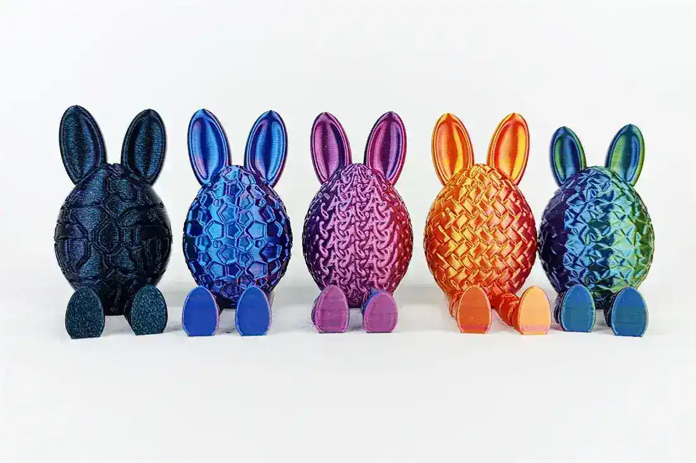
11 3D ModelA matched set of bunnies and eggs for dressing a mantel or kids' table. The pieces coordinate in scale, so the display looks curated rather than collected.
№ 12 · Two mascots, one figure, zero arguments.
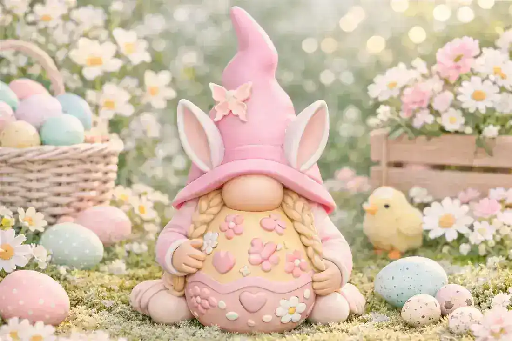
12 3D ModelA gnome with bunny ears that merges two seasonal mascots into one friendly figure. It is quick to print and instantly recognizable across the room.
№ 13 · Flat, fast, and prettier than it has any right to be.
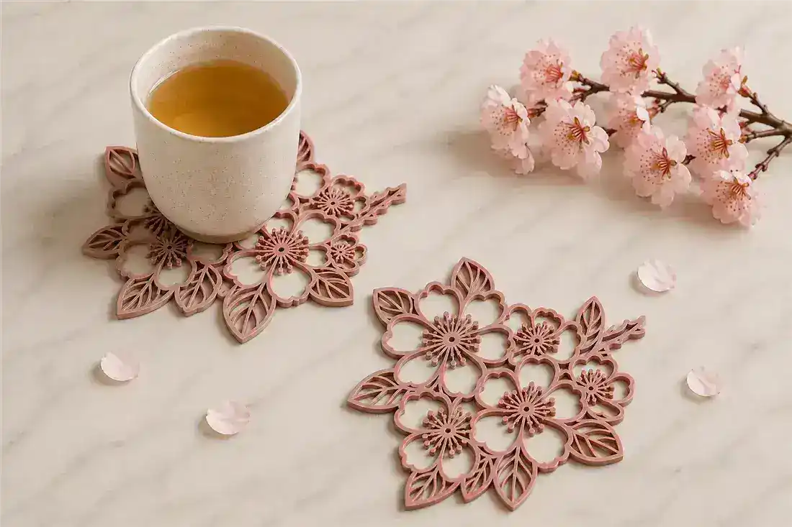
13 3D ModelDelicate blossom petals frame a coaster that brings spring to the coffee table. It prints flat and fast, and the petal relief adds a handmade feel.
№ 14 · Works for printers and laser cutters alike.
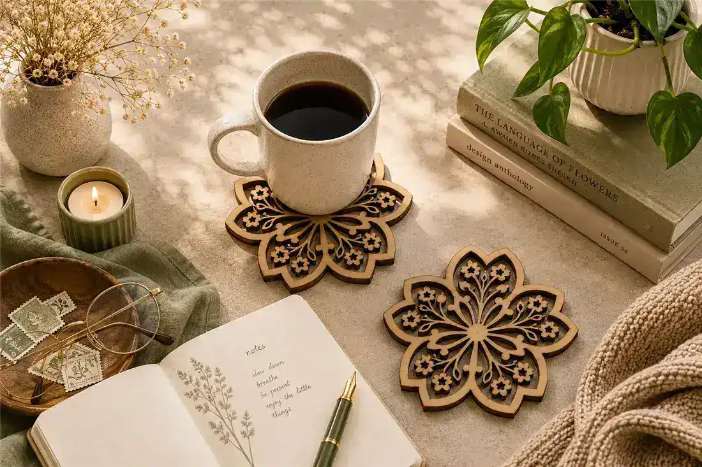
14 3D ModelA layered sakura pattern for coasters with clean lines and quiet elegance. The design suits both 3D printing and laser cutting for spring table sets.
№ 15 · A nutcracker with bunny ears — exactly as fun as it sounds.
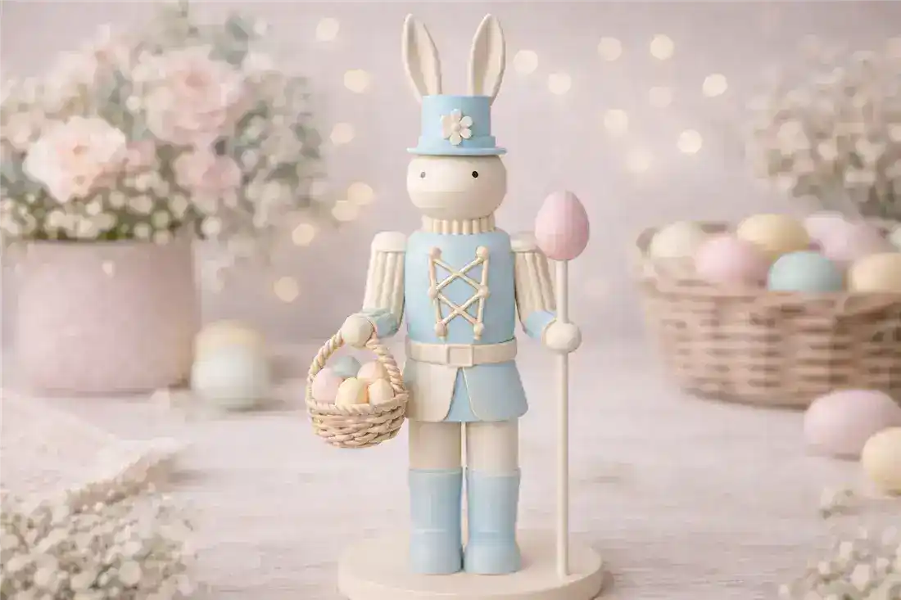
15 3D ModelA nutcracker dressed as an Easter bunny bridges the seasons with a wink of whimsy. He stands proud on a spring table and tucks away neatly once the holiday passes.
Short, practical guides from the blog — the stuff worth knowing before your next print.